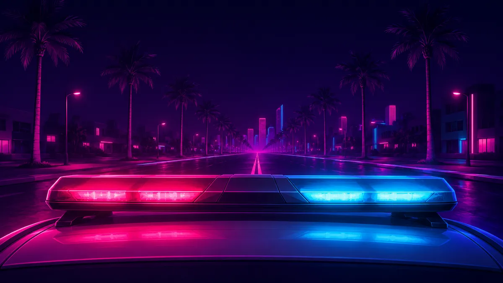
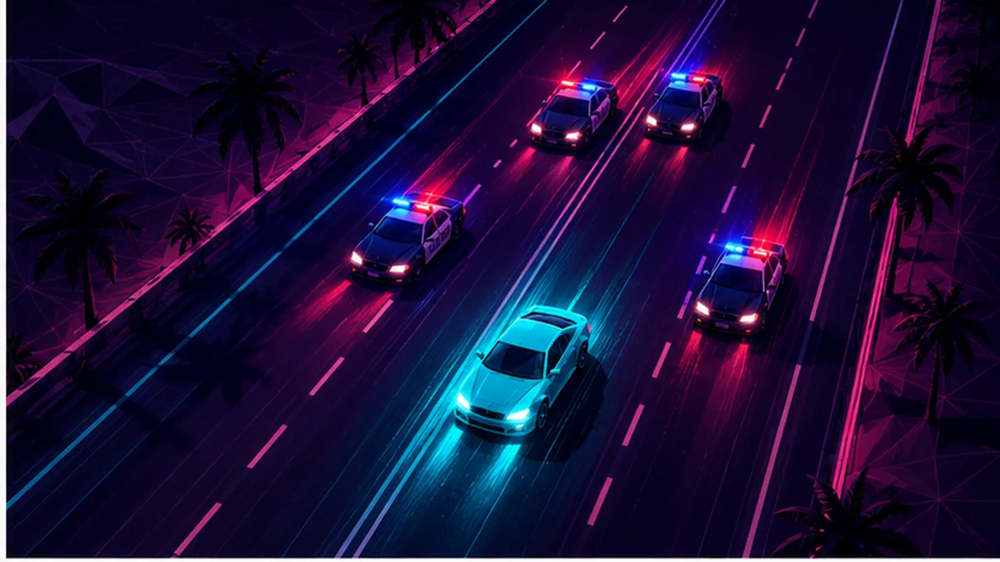
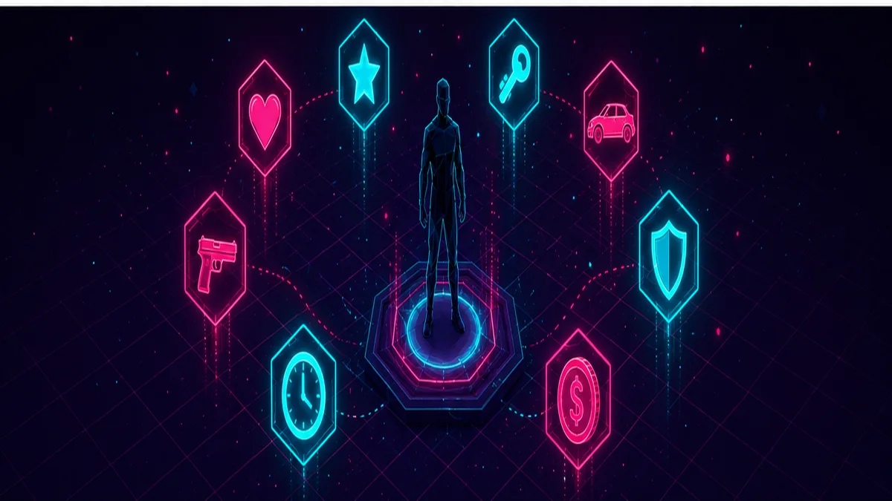

Der Guide vor dem Guide
GTA VI erscheint am 19. November 2026 – einen echten Lösungs-Guide kann es also noch nicht geben. Aber: GTA bleibt GTA. Vieles am Spielprinzip ist seit Jahren gesetzt, und wer die Grundlagen kennt, startet am Release-Tag entspannter. Wir kennzeichnen wie immer, was für GTA VI Offiziell bestätigt ist, was Serien-Tradition ist und was nur Erwartet wird. Ab dem Release wird diese Seite Schritt für Schritt zum vollständigen Guide ausgebaut.

So funktioniert GTA Serien-Tradition
Offene Welt
Nach einem kurzen Einstieg steht dir (fast) die ganze Karte offen. Story-Missionen treiben die Handlung voran, dazwischen kannst du frei erkunden, Nebenaktivitäten nachgehen oder einfach Chaos anrichten. Nichts läuft dir weg – die Story wartet.
Zwei Protagonisten Offiziell
In GTA VI spielst du Jason und Lucia. Wie genau der Wechsel abläuft, hat Rockstar noch nicht gezeigt – in GTA V konnte man zwischen den Figuren fast jederzeit umschalten, Ähnliches gilt hier als wahrscheinlich. Erwartet
Geld regiert Vice City
Missionen, Jobs und krumme Geschäfte bringen Geld; ausgegeben wird es für Waffen, Autos, Klamotten und Immobilien. Klassische Regel: Am Anfang nicht alles verprassen – die teuren Spielzeuge kommen später von allein.
Alles ist ein Werkzeug
Autos, Boote, Motorräder, Flugzeuge, Waffen, Fäuste: GTA gibt dir Systeme, keine Schienen. Viele Missionen lassen mehr als einen Lösungsweg zu – Kreativität wird selten bestraft.

Das Fahndungssystem: Wenn die Polizei jagt Serien-Tradition
Ja, auch in Leonida wirst du von der Polizei gejagt werden – die Fahndungssterne gehören zu GTA wie Palmen zu Vice City. In den Screenshots sind bereits Streifenwagen aus Port Gellhorn zu sehen. So funktioniert das System klassischerweise:
★ Eskalationsstufen
Je mehr Sterne, desto härter die Antwort: von einzelnen Streifenwagen über Straßensperren und Helikopter bis zu Spezialeinheiten. Kleinkriminalität bringt 1–2 Sterne, auf Beamte schießen deutlich mehr.
Fahndung loswerden
Der Klassiker: raus aus dem Sichtkegel der Verfolger und unauffällig bleiben, bis die Suche endet. Bewährt: Fahrzeug wechseln oder umlackieren, in Seitengassen oder Tunnel abtauchen, notfalls ab ins Wasser. In den Keys und Grassrivers dürfte das Gelände dabei helfen.
Verhaftet oder erledigt
Wirst du geschnappt oder ausgeschaltet, wachst du an Wache bzw. Krankenhaus wieder auf – gegen Gebühr und meist ohne die getragenen Waffen. Teuer, aber kein Weltuntergang.
Schlauere Cops? Erwartet
Aus Leaks und Take-Two-Patenten wird deutlich verbesserte NPC- und Polizei-KI erwartet – realistischere Reaktionen, cleverere Verfolgungen. Offiziell bestätigt ist davon nichts.

10 Tipps, die in jedem GTA funktionieren Serien-Tradition
- Erst schauen, dann ballern. Die ersten Stunden sind zum Lernen da: Steuerung, Karte, Fahrverhalten. Die Story läuft nicht weg.
- Fahre viel, fliege früh. Ortskenntnis gewinnt jede Verfolgungsjagd – wer Abkürzungen kennt, verliert die Polizei schneller.
- Nicht jede Mission sofort. Zwischendurch erkunden lohnt sich: Nebenaktivitäten geben Geld, Ausrüstung und oft die besseren Geschichten.
- Geld parken statt prassen. Früh gekaufte Luxusautos bereust du, wenn die erste Immobilie ansteht.
- Deckung ist Leben. GTA ist kein Rambo-Simulator – das Deckungssystem nutzen, Feinde einzeln herauslocken.
- Zielhilfe ohne Scham. Assistiertes Zielen ist Standard auf Konsole; freies Zielen kannst du später immer noch aktivieren.
- Speichern, speichern, speichern. Vor riskanten Aktionen manuell sichern – erspart Frust.
- Taxis & Schnellreise nutzen. Wenn es sie gibt: Zeit ist auch in Leonida Geld.
- Auf die Umgebung hören. Radiosender, Passanten-Dialoge und Nachrichten verstecken oft Hinweise auf Nebeninhalte.
- Eigenes Tempo. GTA-Welten sind auf hunderte Stunden angelegt. Wer nur zur Story rennt, verpasst die Hälfte.
Schwierigkeit: Wie hart wird GTA VI?
Serien-Tradition GTA kennt klassischerweise keinen wählbaren Schwierigkeitsgrad. Stattdessen steuert das Spiel die Härte über andere Stellschrauben, die du selbst anpassen kannst:
- Zielhilfe: von voll assistiert bis komplett frei – der größte Hebel für gefühlte Schwierigkeit.
- Checkpoints: Missionen starten bei Fehlversuchen am letzten Abschnitt, nicht von vorn.
- Missions-Skip: Seit GTA V darf man nach mehreren Fehlversuchen Abschnitte überspringen – ideal, wenn eine Passage nervt.
- Eigene Vorbereitung: Bessere Westen, Waffen und Fahrzeuge machen jede Mission leichter. Wer vorher investiert, flucht seltener.
Ob GTA VI zusätzliche Optionen (z. B. Barrierefreiheits-Einstellungen wie in modernen Rockstar-Titeln) bekommt, ist noch offen. Unbekannt
Countdown-Checkliste: So bist du am 19.11. bereit Offiziell
- Speicherplatz freiräumen: Die Downloadgröße ist noch nicht bekannt – bei einem Spiel dieser Größe solltest du großzügig planen. SSD aufräumen lohnt jetzt schon.
- Preload am 12. November: Digital-Käufer laden eine Woche früher – wer am 19. um Mitternacht spielen will, lädt nicht erst am 19.
- Edition wählen: Standard reicht zum Start; das Upgrade auf Ultimate geht nachträglich. Details im Editionen-Vergleich.
- Konto & Zahlungsart prüfen: PSN/Xbox-Konto aktuell, Zahlungsmethode hinterlegt – klingt banal, verhindert aber den Release-Nacht-Frust.
- Spoiler-Schutzmauer hochziehen: Nach dem Extended Look am 27.8. und spätestens zum Release fluten Leaks die sozialen Medien. Stichwörter muten hilft.
- Finger weg von „Early Access"-Angeboten: Es gibt keinen früheren Zugang und keinen PC-Download. Alles, was das verspricht, ist Betrug.